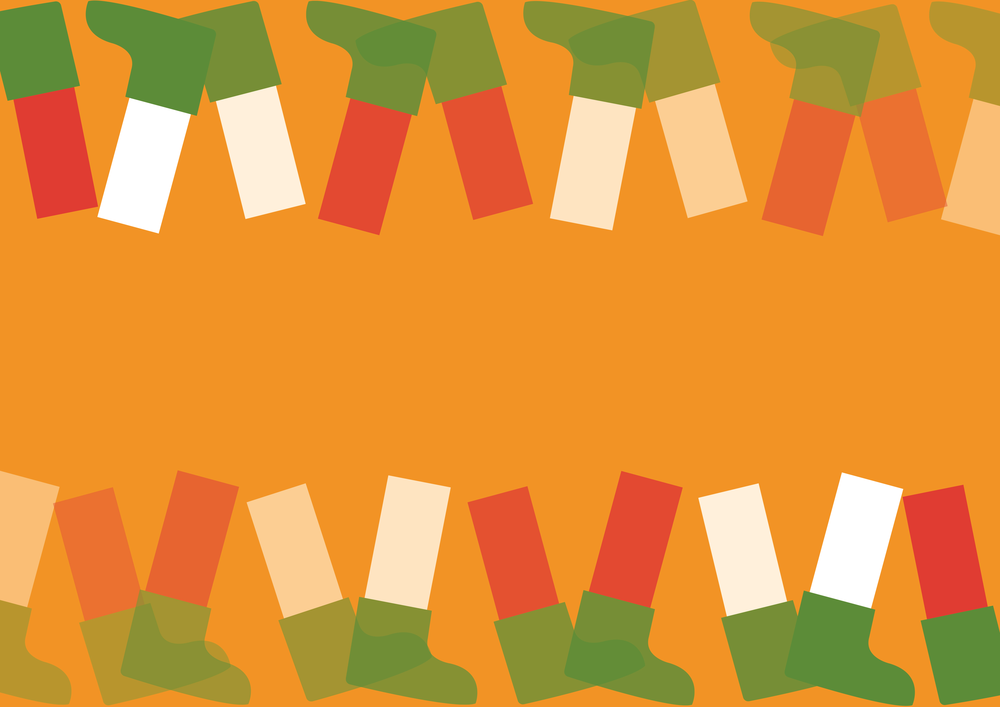
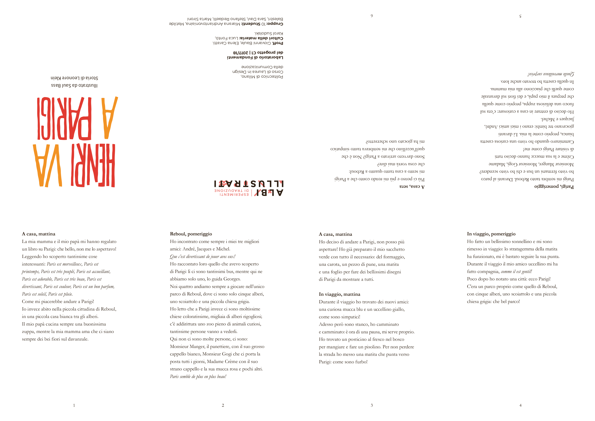
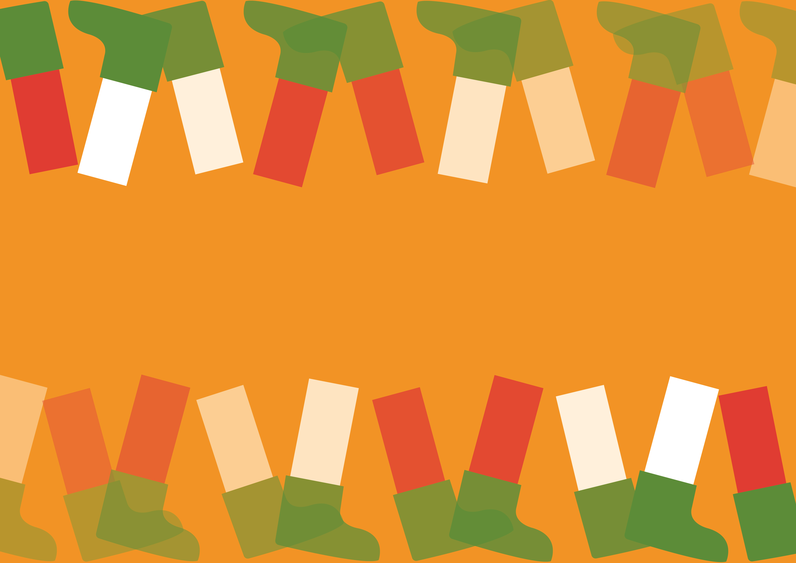
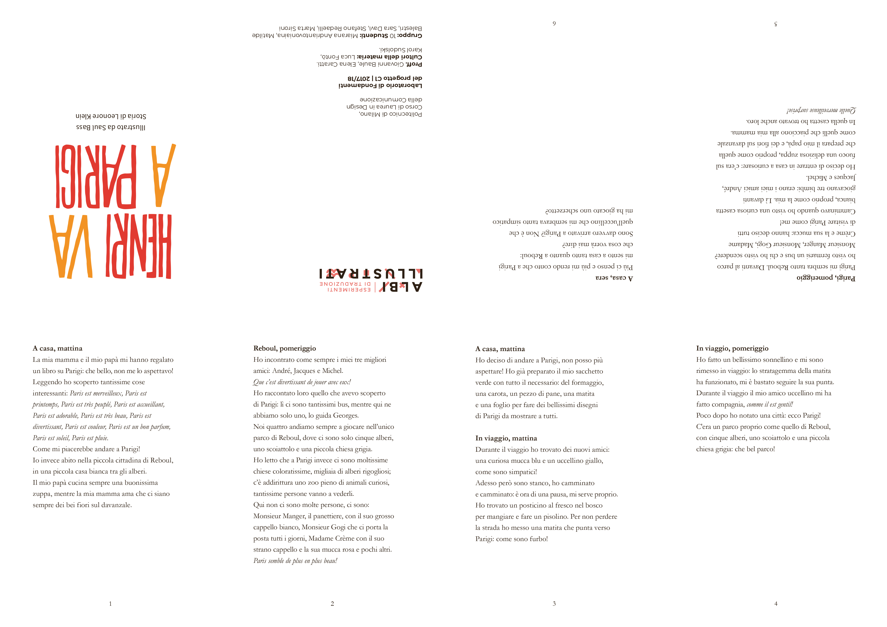

Cover of Henri va a Parigi, Corraini Edizioni

Pages of Henri va a Parigi

Covers of the analysis booklets

Alternative cover for Henri va a Parigi
Leaflet (front)
Leaflet (back)
Teaser for Henri va a Parigi
Cover of Henri va a Parigi, Corraini Edizioni
Pages of Henri va a Parigi
Covers of the analysis booklets
Alternative cover for Henri va a Parigi
Leaflet (front)
Leaflet (back)
Teaser for Henri va a Parigi
Illustrated book Henri va a Parigi
We worked on the illustrated book Henri va a Parigi written by Leonore Klein and illustrated by Saul Bass.
We first analysed the different graphic elements of the book through five booklets, we used this information to design an alternative cover for the book.
We then design a leaflet to resume the contents, both narrative and graphic.
Finally we created an animated teaser for the book, following the protagonist through his journey.
Laboratorio di Fondamenti del Progetto
Proff. G. Baule, E. Caratti
A.A. 2017/2018
Project by:
Marta Sironi, Matilde Balestri, Sara Davì, Patricia Vanz Gibellato, Miarana Andriantovoniaina